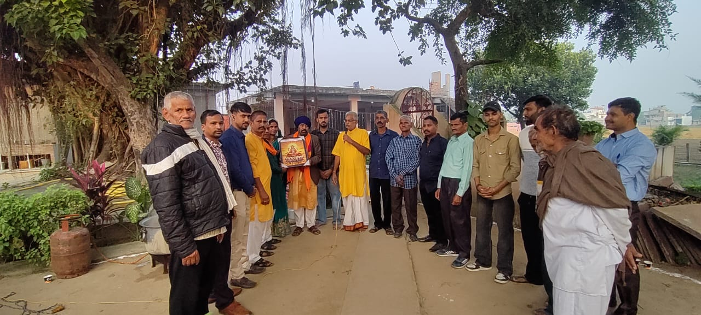

Memories
Photo Gallery
Precious moments from previous Chhath Pooja celebrations at Mahil Gaila
जय छठ मैया
Loading Chhath Pooja Mahil Gaila
Choose Theme
The Sacred Festival of Sun Worship
Village Mahil Gaila, Shaheed Bhagat Singh Nagar, Punjab – 144506
Chhath Pooja Begins In
One of the oldest and most revered Hindu festivals, dedicated to the Sun God (Surya) and Chhathi Maiya

Chhath Puja is an ancient Hindu Vedic festival dedicated to Surya (Sun God) and Chhathi Maiya (Sixth Goddess). It is the most important festival celebrated in Bihar, Jharkhand, Uttar Pradesh, and widely across Punjab. The festival involves worshipping the setting and rising Sun, offering prayers for prosperity, well-being, and longevity of family members.
In our beloved village Mahil Gaila, this festival is celebrated with immense devotion and community spirit. The entire village comes together at the sacred ghat, where devotees stand in water and offer Arghya to the Sun. The organizing committee and dedicated volunteers ensure a grand, safe, and spiritually enriching celebration every year.
The festival holds deep ecological significance – devotees pray for clean water bodies and a bountiful harvest. Chhath Puja teaches us discipline, purity, and gratitude. The 36-hour fast observed by devotees (Vrattis) without water is a testament to unwavering faith and devotion.
The four-day festival follows a strict set of rituals and traditions
नहाय खाय
Devotees take a holy bath, preferably in a river. They cook and eat Kaddu Bhaat (pumpkin rice) as their first meal. The house is thoroughly cleaned.
खरना
The main fast begins. Devotees prepare Rasiyaw (rice kheer) and Roti as Prasad. The evening meal is offered to Chhath Maiya before devotees eat.
संध्या अर्घ्य
The main day of worship. Devotees carry Sup (bamboo basket) with offerings to the ghat and offer Arghya to the setting Sun while standing in water at sunset.
उषा अर्घ्य
Before sunrise, devotees return to the ghat and offer Arghya to the rising Sun. The fast is broken after this final offering. Prasad is distributed among all.
Hour-by-hour guide to the four sacred days of Chhath Pooja
Sacred items offered to Surya Dev and Chhath Maiya
Wheat flour sweet – the most important Chhath Prasad, made with ghee, jaggery, and cardamom
Fresh coconut, banana, sugarcane, pear, lemon, and seasonal fruits arranged beautifully in bamboo baskets
Rice kheer and puris prepared without onion or garlic, offered on Kharna evening with complete purity
Sugarcane stalks symbolize sweetness, prosperity, and growth. They form the frame of the Sup basket offering
On Naha Kha day, pumpkin sabzi with rice is the traditional sattvic meal that begins the festival
The sacred bamboo basket (Daura/Sup) that holds all offerings. Handcrafted, eco-friendly, and symbolically pure
Precious moments from previous Chhath Pooja celebrations at Mahil Gaila
Sacred folk songs sung during the Chhath Pooja celebrations
केलवा के पात पर
Traditional Geetकेलवा के पात पर उगेलन सूरजमल, हो परना हो...
उगी हे दीनानाथ
Arghya Geetउगी हे दीनानाथ, उगी हे दीनानाथ, उगे सुरुज देव...
हो दीनानाथ
Bhakti Geetहो दीनानाथ जपेला, जपेला नाम छठी मैया के...
छठी मैया आईहे
Welcome Songछठी मैया आईहे, दुआरे पर हो, दुआर पर छठी मैया...
Everything you need to know about attending Chhath Pooja at Mahil Gaila
Village Mahil Gaila, Shaheed Bhagat Singh Nagar, Punjab
Village Mahil Gaila
District: Shaheed Bhagat Singh Nagar (Nawanshahr)
Punjab, India – 144506
Sarovar Ram Kutiya Samadha
Mahil Gaila to Naura Road
Mahil Gaila S.B.S. Nagar Punjab
From Nawanshahr: 15 km via NH-44
From Ludhiana: 55 km via SH-20
From Chandigarh: 75 km via NH-44
Reach out to the Chhath Pooja Organizing Committee, Mahil Gaila
+91 98765 XXXXX (President)
+91 98765 XXXXX (Secretary)
chhathpooja.mahilgaila@gmail.com